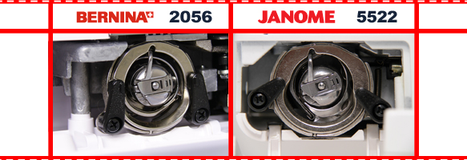
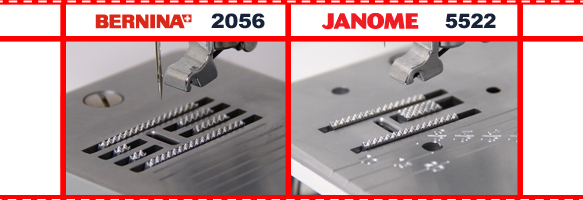
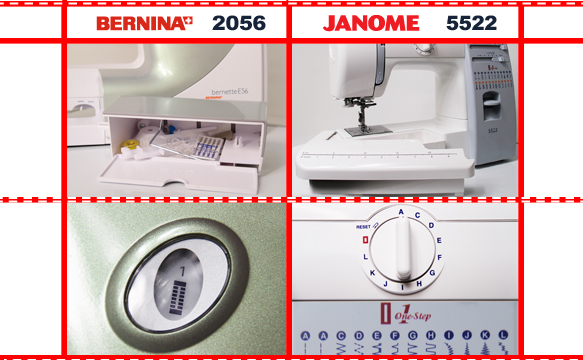

|
Сегодня рассмотрим машины самого востребованного бюджетного ценового сегмента. И конечно, как и во всех остальных нишах, здесь тоже определились свои лидеры. Именно о них мы и поговорим, а именно о Bernina Bernette 2056 и Janome 5522. Сегодняшние конкурсанты обладают вертикальным качающимся челноком, способны выполнить автоматическую петлю и обладают одинаковым количеством операций, пожалуй, это основные схожие моменты. |
|  |
|
Первым делом, отметим внешний вид испытуемых. Bernina выглядит более современной. Она облицована пластиком высокого качества, приятное сочетание цветов и антивибрационные резиновые ножки производят приятное впечатление с первого взгляда. На ее фоне Janome выглядит менее эстетично, как КАМАЗ в сравнении с Мерседесом. Глянцевый пластик, не самый удачный оттенок синего, угловатые формы и отсутствие задней облицовочной крышки - это те самые моменты, которые и позволили сравнить ее с гордостью отечественного автопрома. На задней панели машины стоит остановиться более подробно, по причине мифизации металлической конструкции. Дело в том, что это достаточно устаревшее инженерное решение -не навешивать на каркас-скилет заднюю крышку, а доводить его до пристойного вида путем шлифовки и окраски. В результате оказывается, что это не металлический корпус, а банальное отсутствие задней панели. От чего, между прочим, уже отказались на Европейском рынке. |
|  |
|
Что касается эргономики, здесь можно назвать как явные плюсы, так и некоторые огрехи моделей. У Бернины, стоит отметить, возможность плавной регулировки длины и ширины строчки. Переключатели имеют вид колесиков, позволяющих выставлять множество промежуточных значений. Так же хороша и съемная рукавная платформа, возможность регулировки баланса петли и удобное расположение отключения нижней рейки. К единственному «но» , можно отнести неудобное расположение тумблера реверса, в левой части над полем шитья. Посмотрим, как обстоят дела у Janome. Здесь реверс расположен традиционно, в правой части аппарата, в виде большого плоского рычага, что привычнее и удобнее для пользователя. А вот регуляторы длины стежка и ширины зиг-зага выполнены в форме ползунков - это не позволит разгуляться в выборе промежуточных значений. Ящик-пенал для хранения аксессуаров открывается иначе (для открытия пенала Вам необходимо больше затронуть свободного места). Внешне контейнер оригинальный, с линейкой, но использовать его неудобно, лучше приобрести отдельно шкатулку.. |
|  |
|
Напоследок стоит сконцентрировать внимание на нижних продвижных рейках, напрямую влияющих на диапазон прошиваемых материалов. Bernina оснащена нижним транспортером 4-х полосным, 6-ти сегментным, что позволит продвигать как сверхтяжелые, так и легкие материалы, практически без усилий. При обработке деликатных тканей приветствуется использование дополнительной шагающей лапки – верхнего транспортера. В то время, как у Janome при наличии 3-х полосной и 3-х сегментной рейки, круг материалов, с которыми работает швейная машина сужен. Работа с легкими материалами становится невыносимой, продвижение ухудшается, приводя к сборению ткани и пропускам стежков. |
|
Для проведения нашего эксперимента возьмем тюлевую ткань. Выставим натяжение верхней нити на 2, длина стежка – 2 мм, игла № 60. Для оптимальной проверки качества выпоняемой строчки сложим ткань в 2 слоя. Данный тип работы часто используется в домашних условиях. Наблюдения таковы: Bernina справляется. Продвижение ткани ровное, сосбариваний нет. В результате качественная и прочная строчка. Janome буквально на втором см начинает собирать ткань, но строчка тоже прочная. Ослабив натяжение, получаем почти такую же сборку, только теперь нить можно вытянуть без усилий. При шитье в один слой, Bernina потребовала ослабления верхнего натяжения, с намеком на корректировку нижнего. Но в целом достойно. При усложнении испытания модель 5522 подтвердила свой прошлый результат. |
|
Следующий тест проведем с использованием краеобметочной операции. Оценим её качество, предварительно установив оверлочную лапку, и сложность подбора натяжения. Выберем открытую левостороннюю строчку (в 2056 строчка №17, в 5522 строчка F при длине стежка в положении SS). Длина стежка и ширина зиг-зага одинаковы, натяжение на 4. Будем использовать среднюю по плотности джинсу с уже подготовленным ровным краем. Обе машины справились с задачей, вытянув петли переплетения открытой стороны на изнаночную часть. Этот недостаток был устранен после увеличения натяжения. Можно уверено утверждать - оба конкурсанта с индентичными результатами справились с поставленной задачей. |
|
После включения и начала движения валов выяснилось, что Janome довольно шумная. Слышны небольшой стук и характерный гул, что неудивительно, ведь из-за отсутствия задней крышки корпуса шумоизоляция существенно ниже. Bernina, в свою очередь, работает плавно и тихо, это обеспечивается многолетними разработками и следованием многочисленных европейских стандартов качества. |
Вывод: Если Вам нужна машина для простого домашнего использования. Очень важна возможность обрабатывать широкий диапазон материалов, при этом осуществляя минимум настроек и регулировок, Вам стоит обратить внимание на Bernina Bernette 2056. Выбрав данную модель, Вы получите тихую и трудолюбивую помощницу, которая окажется незаменимой в вашем доме. Если Вам интересно работать больше с тяжелыми и сверхтяжелыми тканями, то оптимальный выбор - Janome 5522. Несмотря на небольшую шумность и незначительные неудобства в регулировках, Вы без труда сможете прошивать джинсу, драп и т.д.
В данной статье мы провели сравнение швейных машинок Bernina Bernette 2056 и Janome 5522. Получить информацию о сравнении других швейных машин вы можете на странице «обзоры». Сайт регулярно обновляется и дополняется новыми обзорами, не пропустите!